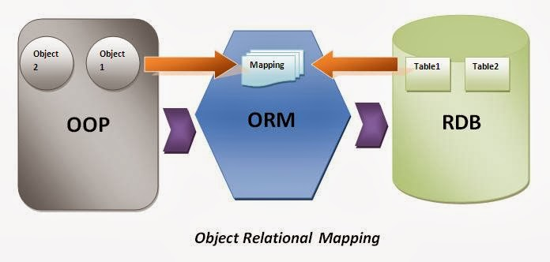

PHP
Урок 20
Eloquent...
ORM
Object-Relational Mapping / объектно-реляционное отображение
технология программирования, которая связывает базы данных с концепциями объектно-ориентированных языков программирования
Active record
Объект является "обёрткой" одной строки из БД или представления, включает в себя доступ к БД и логику обращения с данными

Модели Eloquent
Создание модели используя Artisan. Используя параметр -m можно сразу создать миграцию
php artisan make:model User
Конструктор запросов
// получить все записи из таблицы
$users = DB::table('users')->get();
// получить одну строку
$user = DB::table('users')->where('name', 'John')->first();
// получить количество пользователей
$usersCount = DB::table('users')->count();
// объединения
$users = DB::table('users')
->leftJoin('posts', 'users.id', '=', 'posts.user_id')
->get();